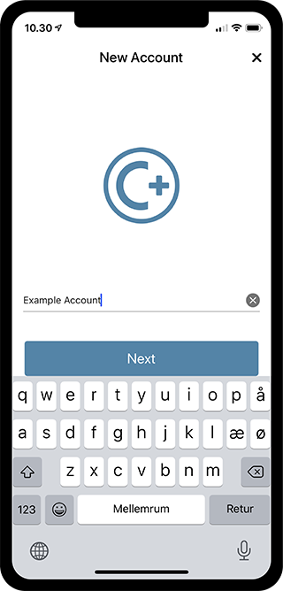
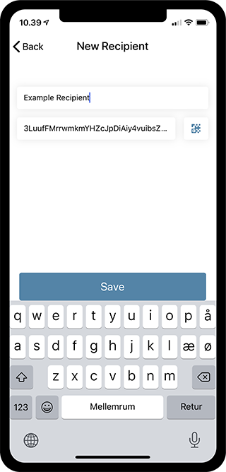
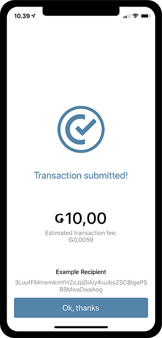
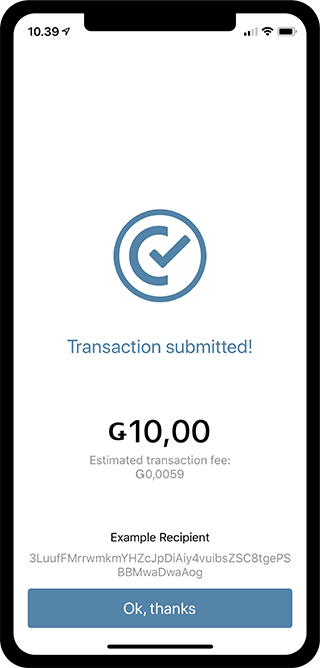

Create an Account, Send and Receive GTU¶
In this quickstart, you will learn how to create an account, receive 100 GTU and send 10 GTU. GTU is the currency of the Concordium blockchain. To do all this, you need both an identity and an account.
Identities and accounts¶
The first step towards creating an account on the Concordium Platform is to obtain an identity from an identity provider. An identity provider is a person or organization that performs off-chain identification of users. Identity providers might collect and verify some user information from you, such as your name or date of birth. These pieces of user information are called attributes.
Once you have an identity you can open accounts that will be associated with it. For each account, you can specify which attributes, among the ones the identity provider approved, you want to reveal publicly on the account. You can reveal any number of them, including none.
To learn more about identities and accounts, see the reference guide.
Before you start¶
To follow the steps in this quickstart, you need the mobile wallet Concordium ID for either iOS or Android. The first time you open Concordium ID, you will be prompted to choose a passcode, and select if you want to add either biometrics or a password. After you have done that, you are ready to make your first ID and account.
In Concordium ID, you can choose between two identity providers, Notabene and Notabene (development).
Notabene will have you go through a process that verifies your real-life identity.
Notabene (development) will issue an identity with attributes of your choice that you choose on their website.
Create an identity¶
If you have not created an identity yet, you will need to do so, before you can start making transactions. The Accounts screen will have a Create identity button, which you can press to start the process. The next screen will let you name your identity, and by clicking Next you will be asked to choose between the Notabene and Notabene (development) options, as mentioned above. By finishing either of the Notabene processes, you will end up with the Identity submitted! screen, which tells you that your identity will soon be ready.


Create an account¶
Having created an identity, you are now ready to create an account as well. If you have not created an account yet, the Accounts screen will display a button called Create account. Press this button or the little plus sign in the upper right corner, to get started.

Now give your account a name to continue the creation process. On the following screen you have to choose which identity to add your account to. In case you have more than one, you can decide which to use. Else just pick the one you just created.
{kind=link}

Having chosen your desired identity, you can now choose what identity data you want to be publically visible on your account. You can choose however many you want, including none at all. The last step is to press Create account, which will submit your account to the chain.


Request 100 GTU¶
On the Testnet you can request 100 GTU for your newly created account. This is a testnet feature that allows you to test the toolchain. After creating your account, go to the Accounts screen and do the following:
Click on the Balance of your account. We will come back to the Shielded Balance in a later quickstart.
{kind=link}

To request 100 GTU, press Request 100 GTU.
After a little while, you should receive your first 100 GTU.
This request can be done once per account.
Send 10 GTU¶
If you have no GTU yet, check out above how to request 100 GTU in the previous section. Go to the Accounts screen and pick the account you want to send 10 GTU from. Click the Balance part of the account. After entering the balance, press the Send Funds button, and you will be met by the next screen.


On the Send Funds screen, you decide on the amount of GTU you want to send, and you have the option to pick a recipient. Start by entering 10 GTU. Then press the Select recipient or shield amount button. Now, if you do not have more than one account yet, or have not added any recipients in the address book, the screen will look something like this:

As you can see, their is a button called Shield amount, which we will not get into yet. Instead, to add a recipient, you can either press the little plus in the upper right corner, or press the QR to scan someone elses account. Let’s press the little plus, and enter the account address and a name for the recipient. If you do not have an address to send GTU to yet, check this out to have someone share their information with you. You can now choose your newly added entry in the address book, as the recipient for your transaction. Finish the process by pressing Send funds.
{kind=link}
 

{kind=link}
Receive GTU from someone else¶
In order to receive GTU from someone, you have to give them the address of the account you want them to send GTU to. To do this, you go to Accounts and choose an account. If you click on ADDRESS, you will see:

Here, you see the address displayed both as text and as a QR code. Give this information to the person you expect to send you GTU.
The shielded balance and transfers¶
As you have probably noticed in this quickstart, the accounts hold a second Shielded Balance. To learn more about the shielded balance and the shielded transfers that can be done with it, continue to this next Quickstart: Two balances and shielded transfers.
Support & Feedback¶
If you run into any issues or have suggestions, post your question or feedback on Discord, or contact us at testnet@concordium.com.